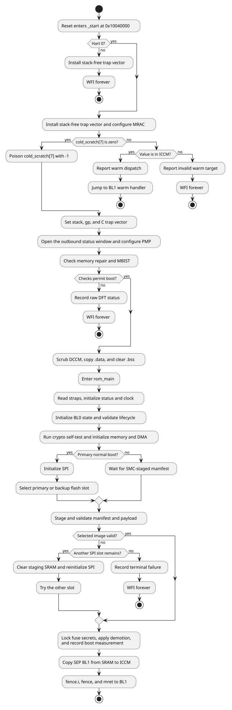

1. Boot flow
The assembly entry path handles every operation that must run before a stack or trustworthy DCCM exists. The C path starts only after the memory-health gate, DCCM scrub, and runtime initialization complete.

1.1. Assembly entry
_start parks every hart except hart 0. Hart 0 installs a trap vector that
does not use the stack, configures the CPU memory attributes, and examines
cold_scratch[7] before touching DCCM. This ordering preserves the BL1 runtime
state on a watchdog reset.
The cold path establishes the stack and global pointer, installs the C-capable
trap vector, opens the outbound filter window used by later firmware, and
programs PMP. It then evaluates the SMC memory-repair and MBIST status. A
failed check stops the boot unless the corresponding strap or
SKIP_MEM_CHECK fuse policy permits it. Only after this gate passes does the
ROM scrub DCCM, copy initialized data from ROM, clear BSS, and call
rom_main().
1.2. C boot sequence
rom_main() performs these operations in order:
-
Verify that
.dataand.bsswere initialized. -
Probe the SMC scratch round-trip and report the ROM version and hash.
-
Read the captured straps and initialize status reporting and the selected clock.
-
Initialize
bl0_state, check that its DCCM reserve does not overlap the stack, validate the lifecycle state, and read the chip ID. -
Run the peripheral/bus reset sequence and the SHA-256 self-test, apply the configured SRAM and ICCM initialization, read
SBOOT_DIS, install the stack canary, and initialize the DMA. -
Select SPI, recovery, or secondary mode.
-
Probe the SMC coordination state and check the stack canary.
-
Load and validate a manifest and payload.
-
Decide demotion, lock sensitive fuse reads, verify the lock, and record the boot measurement.
-
Copy BL1 to ICCM and transfer control.
Errors detected by C code converge on rom_err_fail(). The function records the
error in bl0_state when available, publishes machine-readable status, writes
the failure verdict, and enters a non-returning wfi loop.
A trap takes a separate path. trap_handler_c() writes the failure verdict
alone, so neither bl0_state nor the machine-readable status word records a
trap-terminated boot. [sep-prod-rom-status-errors] describes both trap
vectors.